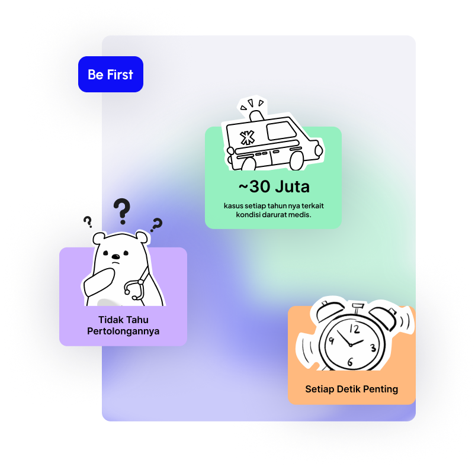
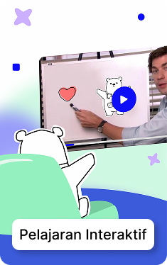
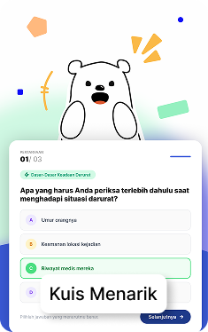
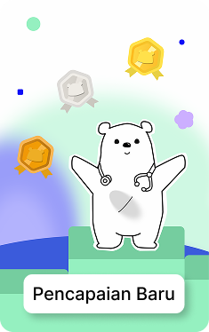

Tahu Harus
Pelajari pertolongan pertama dengan panduan sederhana dan mudah dipahami, agar kamu lebih siap membantu diri sendiri maupun orang lain.
Bersama-sama belajar menjadi lebih siap menghadapi keadaan darurat.
Ingin Membantu Tapi Bingung, Harus Mulai Dari Mana.
Selama Golden Minutes, setiap detik berarti. Be First membantu mengubah keraguan menjadi keberanian lewat pembelajaran yang sederhana dan praktis.

Bagaimana BeFirst Membantu
Dibuat untuk Belajar Lebih Baik
Temukan berbagai fitur yang membuat belajar pertolongan pertama lebih mudah, menyenangkan, dan mudah diingat.
Pelajaran Interaktif
Pelajari pertolongan pertama melalui materi visual yang mudah dipahami dan menyenangkan.

Kuis Menarik
Uji kemampuanmu dengan kuis interaktif setelah menyelesaikan setiap materi.

Pencapaian Baru
Raih badge dan penghargaan saat berhasil menyelesaikan materi pembelajaran.

Pertanyaan
yang mungkin
kamu punya.
Masih penasaran? Temukan jawaban dari beberapa pertanyaan yang sering ditanyakan sebelum mulai belajar bersama Be First.
Be First adalah platform pembelajaran interaktif yang membantu memahami dasar-dasar respons dalam keadaan darurat melalui materi, skenario, dan aktivitas yang sederhana.
Dalam keadaan darurat, tindakan yang dilakukan sebelum bantuan profesional datang dapat memberikan perbedaan penting. Mengetahui respons yang tepat dapat membantu mengurangi keterlambatan dalam mendapatkan pertolongan.
Be First ditujukan untuk siapa saja yang ingin mempelajari dasar-dasar respons dalam keadaan darurat, terutama pelajar dan masyarakat umum.
Tidak. Be First menggunakan penjelasan sederhana dan skenario praktis agar pemula dapat memahami langkah-langkah dasar dengan lebih mudah.
Tidak. Be First adalah platform edukasi yang membantu pengguna mengambil tindakan awal yang tepat sambil menunggu bantuan medis profesional.
Apa Kata Orang Tentang BeFirst?
“Aku suka karena materinya nggak terlalu panjang. Jadi lebih enak buat dipelajari.”
Pelajar
Rania Kinanti A.
“Saya jadi tahu pertolongan pertama bukan cuma soal tahu caranya, tapi juga berani mengambil tindakan yang tepat.”
Mahasiswa
Dimas Renan
“Ternyata banyak hal kecil dalam situasi darurat yang sebelumnya saya nggak tahu. Setelah belajar, saya jadi lebih aware.”
Pekerja
Intan Ayu Kartika
“Informasi pertolongan pertama sebenarnya banyak di internet, tapi sering tersebar di mana-mana. Sama BeFirst jadi lebih terarah dan mudah dipelajari.”
Mahasiswa